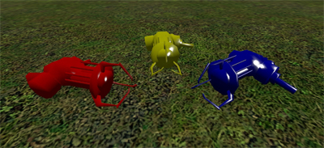

|CelMod| Emblems

Emblems are obtained by building.
They appear at random inside a build that you made.
To increase your chances of getting an emblem:
- Always save your builds.
- Make good builds with a lot of different objects.
- Just build normally, if you wait it will take longer.
If you already have an emblem you cannot get another randomly.*
There are a total of 9 emblems you can get randomly.
There are also many special emblems that can be obtained through events.
You can upgrade your emblem by visiting the Power Booth.**
The Power Booth is located randomly in the map.
* This only changes when the Emblem Engine is reset.
** Some emblems cannot be upgraded.